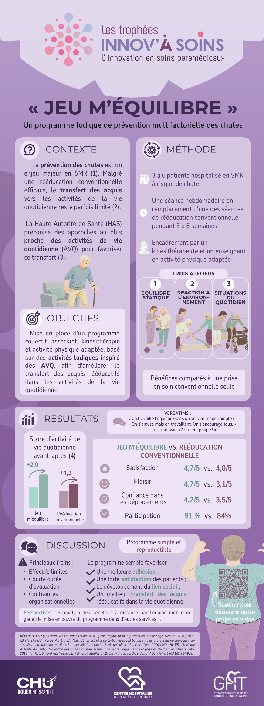

Notre projet
« Jeu m'équilibre » est un programme thérapeutique ludique destiné aux patients de SMR. Il propose une approche multifactorielle de la prévention des chutes, associant l'analyse du kinésithérapeute et l'expertise de l'enseignant en activité physique adaptée. Les ateliers visent à développer l'équilibre, les capacités d'adaptation à l'environnement et le transfert des acquis de la séance dans les situations de la vie quotidienne.
🤝 Une approche pluridisciplinaire
La complémentarité des expertises du kinésithérapeute et de l'enseignant en activité physique adaptée au service d'une prise en soins globale de la prévention des chutes.
🫂 Lien social & engagement
Une dynamique de groupe favorisant les interactions sociales, la motivation et l'engagement actif des patients dans leur prise en soins.
📈 Des résultats encourageants
Découvrez le projet
Notre poster scientifique

📄 Ouvrir le poster en PDF